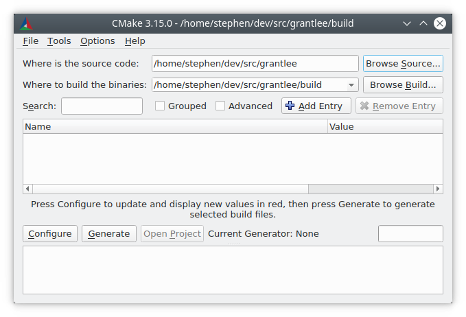
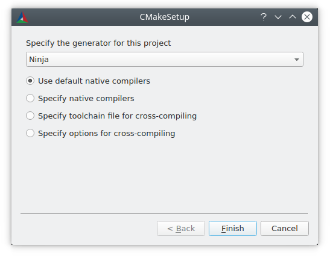
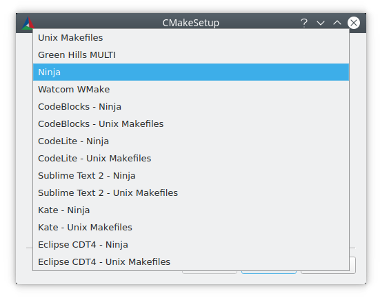
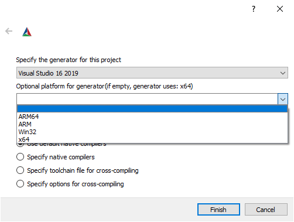
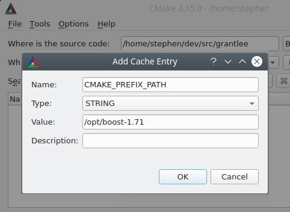

用户交互指南¶
简介¶
当软件包提供基于 CMake 的构建系统及其源代码时，软件的使用者需要运行 CMake 用户交互工具来进行构建。
规范的基于 CMake 的构建系统不会在源码目录中创建任何输出，因此通常建议用户执行源码外构建（out-of-source build）并在该目录中进行构建。首先，必须指示 CMake 生成合适的构建系统，然后用户调用构建工具来处理该生成的构建系统。生成的构建系统特定于生成它的机器，且不可重定向。所提供源码包的每一位使用者都必须使用 CMake 为其各自的系统生成特定的构建系统。
生成的构建系统通常应被视为只读的。作为主要制品，CMake 文件应当完整地描述构建系统，因此在生成构建系统后，不应有理由手动在 IDE 中填充属性。CMake 会定期重写生成的构建系统，因此用户的修改将会被覆盖。
本手册中描述的功能和用户界面通过提供 CMake 文件，可供所有基于 CMake 的构建系统使用。
CMake 工具在处理所提供的 CMake 文件时可能会向用户报告错误，例如报告编译器不受支持、编译器不支持所需的编译选项，或无法找到依赖项。用户必须通过选择不同的编译器、安装依赖项、或指示 CMake 在何处找到它们等方式来解决这些错误。
命令行 cmake 工具¶
对于全新的软件源代码，使用 cmake(1) 的一种简单而典型的方法是创建一个构建目录并在其中调用 cmake
$ cd some_software-1.4.2
$ mkdir build
$ cd build
$ cmake .. -DCMAKE_INSTALL_PREFIX=/opt/the/prefix
$ cmake --build .
$ cmake --build . --target install
建议在与源代码不同的目录中进行构建，因为这样可以保持源代码目录的整洁，允许使用多个工具链构建单个源代码，并可以通过简单地删除构建目录来轻松清除构建制品。
CMake 工具可能会报告针对软件提供者而非使用者的警告。此类警告以“This warning is for project developers”结尾。用户可以通过向 cmake(1) 传递 -Wno-dev 标志来禁用此类警告。
cmake-gui 工具¶
更习惯 GUI 界面的用户可以使用 cmake-gui(1) 工具来调用 CMake 并生成构建系统。
必须首先指定源目录和二进制（构建）目录。始终建议为源码和构建使用不同的目录。

生成构建系统¶
有多种用户界面工具可用于根据 CMake 文件生成构建系统。ccmake(1) 和 cmake-gui(1) 工具引导用户设置各种必要的选项。cmake(1) 工具可以在命令行上调用以指定选项。本手册描述了可以使用任何用户界面工具设置的选项，尽管每种工具设置选项的模式有所不同。
命令行环境¶
当通过命令行构建系统（如 Makefiles 或 Ninja）调用 cmake(1) 时，必须使用正确的构建环境以确保构建工具可用。CMake 必须能够找到适当的 构建工具、编译器、链接器以及其他所需的工具。
在 Linux 系统上，适当的工具通常位于系统范围内，可以通过系统包管理器轻松安装。用户提供或安装在非默认位置的其他工具链也可以使用。
在交叉编译时，某些平台可能需要设置环境变量或提供脚本来设置环境。
Visual Studio 提供了多个命令行提示符和 vcvarsall.bat 脚本，用于为命令行构建系统设置正确的环境。虽然在使用 Visual Studio 生成器时不严格要求使用对应的命令行环境，但这样做也没有任何弊端。
使用 Xcode 时，可能会安装多个 Xcode 版本。选择使用哪个版本有多种方法，最常见的方法是：
在 Xcode IDE 的首选项中设置默认版本。
通过
xcode-select命令行工具设置默认版本。在运行 CMake 和构建工具时设置
DEVELOPER_DIR环境变量来覆盖默认版本。
为方便起见，cmake-gui(1) 提供了环境变量编辑器。
命令行 -G 选项¶
CMake 默认会根据平台选择生成器。通常，默认生成器足以让用户继续进行软件构建。
用户可以使用 -G 选项覆盖默认生成器。
$ cmake .. -G Ninja
cmake --help 的输出包含了一份可供用户选择的 生成器 列表。请注意，生成器名称区分大小写。
在类 Unix 系统（包括 Mac OS X）上，默认使用 Unix Makefiles 生成器。该生成器的变体也可以在 Windows 的各种环境中使用，例如 NMake Makefiles 和 MinGW Makefiles 生成器。这些生成器会生成可以由 make、gmake、nmake 或类似工具执行的 Makefile 变体。有关目标环境和工具的更多信息，请参阅各个生成器的文档。
Ninja 生成器适用于所有主流平台。ninja 是一个在用例上类似于 make 的构建工具，但更侧重于性能和效率。
在 Windows 上，cmake(1) 可用于为 Visual Studio IDE 生成解决方案。Visual Studio 版本可以通过 IDE 的产品名称（包含四位年份）来指定。对于有时用于指代 Visual Studio 版本的其他方式，也提供了别名，例如对应 VisualC++ 编译器产品版本的两位数字，或两者的组合。
$ cmake .. -G "Visual Studio 2019"
$ cmake .. -G "Visual Studio 16"
$ cmake .. -G "Visual Studio 16 2019"
Visual Studio 生成器 可以针对不同的架构。可以使用 -A 选项指定目标架构。
cmake .. -G "Visual Studio 2019" -A x64
cmake .. -G "Visual Studio 16" -A ARM
cmake .. -G "Visual Studio 16 2019" -A ARM64
在 Apple 上，可以使用 Xcode 生成器为 Xcode IDE 生成项目文件。
一些 IDE（如 KDevelop4、QtCreator 和 CLion）对基于 CMake 的构建系统有原生支持。这些 IDE 提供了用于选择底层生成器的用户界面，通常是在 Makefile 或 Ninja 生成器之间进行选择。
注意，在首次调用 CMake 后，无法通过 -G 更改生成器。要更改生成器，必须删除构建目录并从头开始启动构建。
当生成 Visual Studio 项目和解决方案文件时，在初始运行 cmake(1) 时还可以使用其他几个选项。
可以使用 cmake -T 选项指定 Visual Studio 工具集。
$ # Build with the clang-cl toolset
$ cmake.exe .. -G "Visual Studio 16 2019" -A x64 -T ClangCL
$ # Build targeting Windows XP
$ cmake.exe .. -G "Visual Studio 16 2019" -A x64 -T v120_xp
与 -A 选项指定*目标*架构不同，-T 选项可用于指定所用工具链的详细信息。例如，可以提供 -Thost=x64 来选择 64 位版本的宿主工具。以下展示了如何使用 64 位工具并同时为 64 位目标架构进行构建。
$ cmake .. -G "Visual Studio 16 2019" -A x64 -Thost=x64
在 cmake-gui 中选择生成器¶
“Configure”按钮会触发一个新的对话框，用于选择要使用的 CMake 生成器。

命令行上可用的所有生成器在 cmake-gui(1) 中也都可用。

当选择 Visual Studio 生成器时，可以使用更多选项来设置要生成的架构。

设置构建变量¶
软件项目通常要求在调用 CMake 时在命令行上设置变量。下表中列出了一些最常用的 CMake 变量。
变量 |
含义 |
|---|---|
搜索 |
|
搜索其他 CMake 模块的路径 |
|
构建配置（如 |
|
通过 |
|
包含交叉编译数据的文件，如 |
|
是否为未指定类型的 |
|
生成一个供 clang 工具使用的 |
|
生成一个供 clang 工具使用的 |
可能还有其他特定于项目的变量可用于控制构建，例如启用或禁用项目的组件。
CMake 没有提供关于不同构建系统之间如何命名这些变量的规范，除非变量以 CMAKE_ 为前缀，这通常指代 CMake 自身提供的选项，不应在第三方选项中使用（第三方应使用自己的前缀）。cmake-gui(1) 工具可以按前缀将选项分组显示，因此第三方确保使用自洽的前缀是有意义的。
在命令行设置变量¶
CMake 变量既可以在最初创建构建时在命令行上设置，
$ mkdir build
$ cd build
$ cmake .. -G Ninja -DCMAKE_BUILD_TYPE=Debug
也可以在后续调用 cmake(1) 时设置。
$ cd build
$ cmake . -DCMAKE_BUILD_TYPE=Debug
-U 标志可用于在 cmake(1) 命令行上取消设置变量。
$ cd build
$ cmake . -UMyPackage_DIR
最初在命令行上创建的 CMake 构建系统可以使用 cmake-gui(1) 进行修改，反之亦然。
cmake(1) 工具允许使用 -C 选项指定一个文件来填充初始缓存。这对于简化重复需要相同缓存条目的命令和脚本非常有用。
在 cmake-gui 中设置变量¶
可以在 cmake-gui 中使用“Add Entry”按钮设置变量。这会触发一个新的对话框来设置变量值。

cmake-gui(1) 用户界面的主视图可用于编辑现有变量。
CMake 缓存¶
当执行 CMake 时，它需要找到编译器、工具和依赖项的位置。它还需要能够持续地重新生成构建系统，以使用相同的编译/链接标志和依赖项路径。此类参数也需要由用户可配置，因为它们是特定于用户系统的路径和选项。
当首次执行时，CMake 会在构建目录中生成一个 CMakeCache.txt 文件，其中包含用于此类制品的键值对。用户可以通过运行 cmake-gui(1) 或 ccmake(1) 工具来查看或编辑缓存文件。这些工具提供了一个交互式界面，用于重新配置所提供的软件并重新生成构建系统（在编辑缓存值后需要这样做）。每个缓存条目可能都有一个关联的简短帮助文本，显示在用户界面工具中。
缓存条目也可能具有类型，以说明应如何在用户界面中呈现它。例如，类型为 BOOL 的缓存条目可以通过用户界面中的复选框进行编辑，STRING 可以在文本字段中编辑，而 FILEPATH 虽然类似于 STRING，但还应提供使用文件对话框定位文件系统路径的方法。类型为 STRING 的条目可以提供允许值的受限列表，这些值随后会显示在 cmake-gui(1) 用户界面的下拉菜单中（请参阅 STRINGS 缓存属性）。
软件包随附的 CMake 文件也可能使用 option() 命令定义布尔切换选项。该命令创建一个包含帮助文本和默认值的缓存条目。此类缓存条目通常特定于所提供的软件，并影响构建的配置，例如是否构建测试和示例、是否在启用异常的情况下构建等。
预设¶
CMake 理解 CMakePresets.json 文件及其用户特定版本 CMakeUserPresets.json，用于保存常用配置设置的预设。这些预设可以设置构建目录、生成器、缓存变量、环境变量和其他命令行选项。所有这些选项都可以被用户覆盖。CMakePresets.json 格式的完整详细信息列在 cmake-presets(7) 手册中。
在命令行中使用预设¶
当使用 cmake(1) 命令行工具时，可以使用 --preset 选项调用预设。如果指定了 --preset，则不需要生成器和构建目录，但可以指定它们来覆盖预设中的值。例如，如果您有以下 CMakePresets.json 文件
{
"version": 1,
"configurePresets": [
{
"name": "ninja-release",
"binaryDir": "${sourceDir}/build/${presetName}",
"generator": "Ninja",
"cacheVariables": {
"CMAKE_BUILD_TYPE": "Release"
}
}
]
}
并且您运行以下命令
cmake -S /path/to/source --preset=ninja-release
这将在 /path/to/source/build/ninja-release 中使用 Ninja 生成器生成一个构建目录，并将 CMAKE_BUILD_TYPE 设置为 Release。
如果您想查看可用预设的列表，可以运行
cmake -S /path/to/source --list-presets
这将列出 /path/to/source/CMakePresets.json 和 /path/to/source/CMakeUsersPresets.json 中可用的预设，而无需生成构建树。
在 cmake-gui 中使用预设¶
如果项目有可用的预设（通过 CMakePresets.json 或 CMakeUserPresets.json），预设列表将出现在 cmake-gui(1) 的源目录和二进制目录之间的下拉菜单中。选择一个预设会设置二进制目录、生成器、环境变量和缓存变量，但所有这些选项在选择预设后都可以被覆盖。
调用构建系统¶
生成构建系统后，可以通过调用特定的构建工具来构建软件。对于 IDE 生成器，这可能涉及将生成的项目文件加载到 IDE 中以调用构建。
CMake 知道调用构建所需的特定构建工具，因此通常在生成后从命令行构建系统或项目时，可以在构建目录中调用以下命令
$ cmake --build .
--build 标志为 cmake(1) 工具启用了一种特定的操作模式。它调用与 生成器 关联的 CMAKE_MAKE_PROGRAM 命令，或用户配置的构建工具。
--build 模式还接受参数 --target 来指定要构建的特定目标，例如特定的库、可执行文件或自定义目标，或者特定的特殊目标（如 install）。
$ cmake --build . --target myexe
--build 模式还接受 --config 参数（对于多配置生成器），以指定要构建的特定配置。
$ cmake --build . --target myexe --config Release
如果生成器生成的构建系统特定于某个配置（在调用 cmake 时使用 CMAKE_BUILD_TYPE 变量选择），则 --config 选项无效。
某些构建系统会省略构建期间调用的命令行细节。--verbose 标志可用于显示这些命令行。
$ cmake --build . --target myexe --verbose
--build 模式还可以通过在 -- 之后列出，将特定的命令行选项传递给底层构建工具。这对于向构建工具指定选项很有用（例如在作业失败后继续构建），而 CMake 自身不提供高级用户界面。
对于所有生成器，在调用 CMake 后都可以运行底层构建工具。例如，在用 Unix Makefiles 生成器生成后可以执行 make，或者在用 Ninja 生成器生成后执行 ninja 等。IDE 构建系统通常也提供可调用的命令行工具来构建项目。
选择目标¶
CMake 文件中描述的每个可执行文件和库都是一个构建目标，构建系统也可能描述自定义目标，既可以用于内部用途，也可以供用户使用（例如创建文档）。
CMake 为所有提供 CMake 文件的构建系统提供了一些内置目标。
allMakefile 生成器 和 Ninja 生成器 使用的默认目标。构建构建系统中的所有目标，除了那些被其
EXCLUDE_FROM_ALL目标属性或EXCLUDE_FROM_ALL目录属性排除的目标。ALL_BUILD名称用于Xcode和 Visual Studio 生成器。help列出可用于构建的目标。此目标在使用 Makefile 生成器 或 Ninja 生成器 时可用，确切的输出因工具而异。
clean删除构建的目标文件和其他输出文件。Makefile 生成器 为每个目录创建一个
clean目标，以便可以清理单个目录。Ninja工具提供了其自己的细粒度-t clean系统。测试运行测试。仅当 CMake 文件提供基于 CTest 的测试时，此目标才会自动可用。另请参阅 运行测试。
安装package创建二进制包。仅当 CMake 文件提供基于 CPack 的包时，此目标才会自动可用。
package_source创建源码包。仅当 CMake 文件提供基于 CPack 的包时，此目标才会自动可用。
对于 Makefile 生成器，提供了二进制构建目标的 /fast 变体。/fast 变体用于构建指定的目标而不考虑其依赖项。不检查依赖项，如果已过期也不会重新构建。Ninja 生成器 在依赖项检查方面足够快，因此该生成器不提供此类目标。
Makefile 生成器 还提供构建目标来预处理、汇编和编译特定目录中的单个文件。
$ make foo.cpp.i
$ make foo.cpp.s
$ make foo.cpp.o
文件扩展名被内置到目标的名称中，因为可能存在名称相同但扩展名不同的另一个文件。但是，也提供了没有文件扩展名的构建目标。
$ make foo.i
$ make foo.s
$ make foo.o
在包含 foo.c 和 foo.cpp 的构建系统中，构建 foo.i 目标将预处理这两个文件。
指定构建程序¶
由 --build 模式调用的程序由 CMAKE_MAKE_PROGRAM 变量确定。对于大多数生成器，不需要配置特定的程序。
生成器 |
默认 make 程序 |
替代方案 |
|---|---|---|
XCode |
|
|
Unix Makefiles |
|
|
NMake Makefiles |
|
|
NMake Makefiles JOM |
|
|
MinGW Makefiles |
|
|
MSYS Makefiles |
|
|
Ninja |
|
|
Visual Studio |
|
|
Watcom WMake |
|
jom 工具能够以 NMake 风格读取 Makefile 并并行构建，而 nmake 工具总是串行构建。使用 NMake Makefiles 生成器生成后，用户可以运行 jom 而不是 nmake。--build 模式在将 CMAKE_MAKE_PROGRAM 设置为 jom 且使用 NMake Makefiles 生成器时，也会使用 jom。为了方便起见，提供了 NMake Makefiles JOM 生成器，以正常方式查找 jom 并将其用作 CMAKE_MAKE_PROGRAM。为了完整起见，nmake 是另一种可以处理 NMake Makefiles JOM 生成器输出的工具，但这样做会降低性能。
软件安装¶
可以在 CMake 缓存中设置 CMAKE_INSTALL_PREFIX 变量，以指定安装所提供软件的位置。如果提供的软件有使用 install() 命令指定的安装规则，它们会将制品安装到该前缀中。在 Windows 上，默认安装位置对应于 ProgramFiles 系统目录，该目录可能是架构相关的。在 Unix 宿主机上，/usr/local 是默认安装位置。
CMAKE_INSTALL_PREFIX 变量始终指向目标文件系统上的安装前缀。
在交叉编译或打包场景中，当 sysroot 是只读的或 sysroot 应保持整洁时，可以将 CMAKE_STAGING_PREFIX 变量设置为实际安装文件的位置。
命令
$ cmake .. -DCMAKE_INSTALL_PREFIX=/usr/local \
-DCMAKE_SYSROOT=$HOME/root \
-DCMAKE_STAGING_PREFIX=/tmp/package
$ cmake --build .
$ cmake --build . --target install
会导致文件被安装到宿主机上的 /tmp/package/lib/libfoo.so 等路径中。宿主机上的 /usr/local 位置不受影响。
一些所提供的软件可能会指定 uninstall 规则，但 CMake 本身默认不会生成此类规则。
运行测试¶
ctest(1) 工具随 CMake 分发版一起提供，用于执行所提供的测试并报告结果。test 构建目标用于运行所有可用测试，但 ctest(1) 工具允许细粒度控制要运行的测试、运行方式以及如何报告结果。在构建目录中执行 ctest(1) 等同于运行 test 目标。
$ ctest
可以传递正则表达式以仅运行匹配该表达式的测试。要仅运行名称中带有 Qt 的测试
$ ctest -R Qt
测试也可以通过正则表达式排除。要仅运行名称中不带 Qt 的测试
$ ctest -E Qt
测试可以通过向 ctest(1) 传递 -j 参数来并行运行。
$ ctest -R Qt -j8
或者，可以设置环境变量 CTEST_PARALLEL_LEVEL 以避免传递 -j。
默认情况下，ctest(1) 不会打印来自测试的输出。命令行参数 -V（或 --verbose）启用详细模式以打印来自所有测试的输出。--output-on-failure 选项仅打印失败测试的测试输出。可以将环境变量 CTEST_OUTPUT_ON_FAILURE 设置为 1，作为向 ctest(1) 传递 --output-on-failure 选项的替代方案。